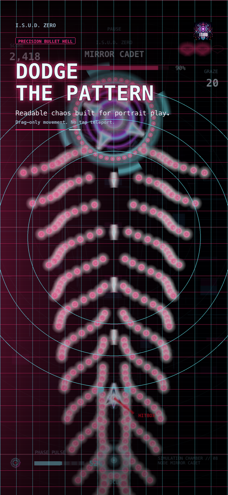
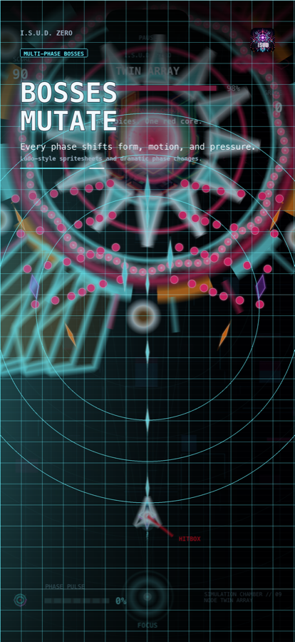
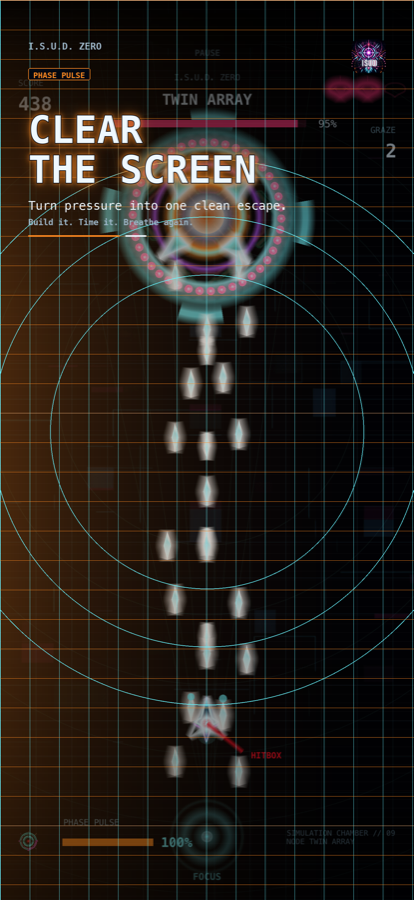
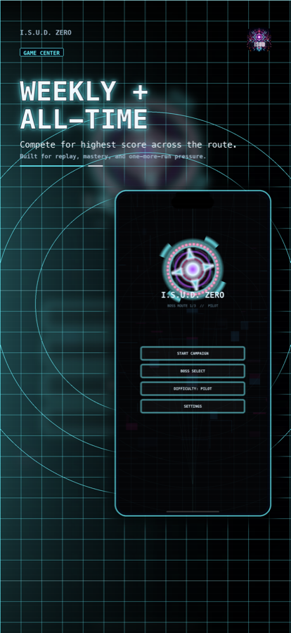

ISUD Zero · Available on the App Store
Read the pattern. Own the run.
Dodge readable bullet patterns, graze for Phase Pulse, and chase clean weekly scores against the Pattern Engine.

01
Precision in the chaos
Drag to move with a fair red-core hitbox.
02
Graze. Charge. Clear.
Close calls build Phase Pulse for emergency screen clears.
03
Four evolving bosses
Face distinct patterns and escalating multi-phase encounters.
04
Chase a cleaner score
Compete on Game Center weekly and all-time leaderboards.



A separate arcade adventure
ISUD 2
Eight 3D bosses. Three phases each. Choose your battle, read the warning cues, and find your opening.
Explore ISUD 2